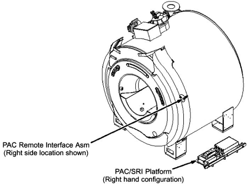
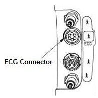
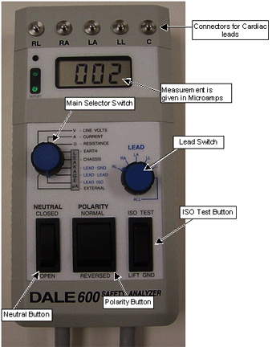
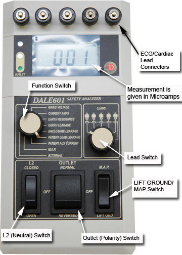
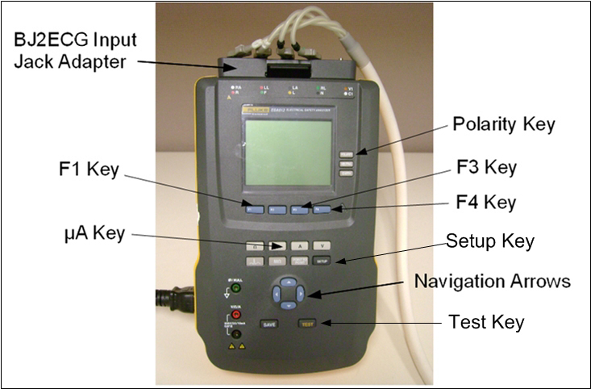

Ferrous materials can become dangerous projectiles in the
presence of the magnetic field Produced by the Signa Magnet.
Do not Bring any ferromagnetic tools or equipment into
the magnet room other than The Safety Analyzer as it is required to
use in magnet room. For The Safety Analyzer, read warning description
below.
Warning
The Safety Analyzer contains ferrous material
personal injury could result due to strong attraction to
the magnet.
The Safety Analyzer must be located as far away from the
magnet as possible to avoid Personal injury or equipment damage.
Notice
The Safety Analyzer must be located as far away from the magnet as possible to successfully execute this test. Getting closer to the magnet affects the Safety Analyzer and alters the tool’s ability to take an accurate measurement.
About this task
When Safety Analyzer Kits are sent in for calibration, the units
are being upgraded with the Dale 601/601E Safety Analyzer (generally
Americas and Asia) or the Fluke ESA612 Safety Analyzer (generally
Europe).
This procedure is divided into three sections: first the Dale
600/600E; next the Dale 601/601E; and finally the Fluke ESA612.
Topic ID: id_SL5543391-346817
Data Sheet for Recording Leakage Current Data
About this task
Use the supplied data sheet to record the leakage current data. Table 4 is a reference
of what is contained on the data sheet. Print the form. 2087498.pdf
Table 4. PAC Leakage Current Measurements
LEAD
SELECT POSITION
METER
READING NORMAL POSITION (microamps)
METER
READING REVERSE POSITION (microamps)
Patient (Lead to Ground) Leakage
Current
Right Leg (RL)
Right Arm (RA)
Left Arm (LA)
Left Leg (LL)
Patient (Lead
to Lead) Auxiliary Current
RL
RA
LA
LL
M.A.P. (Isolation
Tests)
ALL LEADS M.A.P. Test
Topic ID: id_SL1494829-346817
Using Dale 600/600E Safety Analyzer
Procedure
DANGER
Strong Magnetic Field!
Ferrous materials can become dangerous projectiles in the
presence of the magnetic field Produced by the Signa Magnet.
Do not Bring any ferromagnetic tools or equipment into
the magnet room.
Notice
The Safety Analyzer must be located as far away from the magnet as possible to successfully execute this test. Getting closer to the magnet affects the Safety Analyzer and alters the tool’s ability to take an accurate measurement.
Plug the Analyzer into a power source in the magnet room, which
allows access to the PAC Remote Interface Assembly while staying at
least 20 inches (51 cm) from the magnet.
Figure 1. Location Of The PAC Remote Interface ASM For LCC/CX/K4 Magnet

At Physiological Acquisition Controller (PAC) Remote Interface
Assembly, connect the Patient Lead cable and the Cardiac Lead Set
at the ECG connector.
The ECG connector is round and is labeled with “ECG”
or a heart symbol.
Figure 2. ECG Connector (Example)

Connect cardiac leads to Dale 600/600E (46-328406G1). See Figure 3.
Figure 3. Dale 600 Analyzer

Place the Neutral Button in the CLOSED position.
Place the Polarity switch in the NORMAL position.
On the Dale 600/600E set the main selector switch to LEAKAGE - LEAD-GND.
Move the LEAD switch through the positions
shown in Table 5. Verify leakage current displayed on meter is
less than 50 micro amps and record the values in the Data Sheet.
Note:
Typically the Lead to Ground and Lead-to-Lead readings
are close to zero and less than 50 microamps. Measurements exceeding
the 50 micro amps indicate an issue in the corresponding lead.
Table 5. Leakage Current Measurements
LEAD SELECT POSITION
RL
RA
LA
LL
On the Dale 600/600E set the main selector switch to LEAKAGE - LEAD-LEAD.
Move LEAD switch through the positions
shown in Table 5. Verify leakage current displayed on meter is
less than 50 micro amps and record the values in the Data Sheet.
On the Dale 600/600E set the main selector switch to LEAKAGE - LEAD-ISO.
Make sure that the leads are not touching the floor.
Move the LEAD switch to ALL
LEADS.
Press button ISO TEST and record the
meter reading in Data Sheet. This reading must be less than 50 micro
amps.
RepeatStep 5 -Step 13 with the POLARITY switch
in the REVERSED position.
Topic ID: id_SL1494843-346817
Using Dale 601/601E Safety Analyzer
Procedure
DANGER
Strong Magnetic Field!
Ferrous materials can become dangerous projectiles in the
presence of the magnetic field Produced by the Signa Magnet.
Do not Bring any ferromagnetic tools or equipment into
the magnet room.
Notice
The Safety Analyzer must be located as far away from the magnet as possible to successfully execute this test. Getting closer to the magnet affects the Safety Analyzer and alters the tool’s ability to take an accurate measurement.
Plug the Analyzer into a power source in the magnet room, which
allows access to the PAC Remote Interface Assembly while staying at
least 20 inches (51 cm) from the magnet.
Figure 4. Location Of The PAC Remote Interface ASM For LCC/CX/K4 Magnet
At Physiological Acquisition Controller (PAC) Remote Interface
Assembly, connect the Patient Lead cable and the Cardiac Lead Set
at the ECG connector.
The ECG connector is round and is labeled with “ECG”
or a heart symbol.
Figure 5. ECG Connector (Example)
Verify that the Test Load selector switch is set at 601 for
IEC601.1. See Figure 6.
Figure 6. Test Load Selector Switch Setting
Connect the ECG leads to Dale 601/601E. See Figure 7. Not all systems
will have the Cardiac (C) lead.
Place the L2 (Neutral) Switch in the CLOSED position. See Figure 8.
Figure 8. Dale 601/601E Safety Analyzer

Note:
Be sure to pause in the OFF (Middle) position when switching polarity from normal to reverse
Place the Outlet (Polarity) switch in
the NORMAL position.
On the Dale 601/601E set the Function Switch to PATIENT
LEAD LEAKAGE.
Move Lead switch through the lead positions shown in Table 6. Verify leakage
current displayed on meter is less than 50 micro amps and record the
values in the Data Sheet.
Note:
Typically the Patient Lead Leakage (Lead to Ground) and the Patient Aux Current (Lead-to-Lead) readings are close to zero and less than 50 microamps.
Measurements exceeding the 50 micro amps indicate an issue in the
corresponding lead.
Table 6. Lead Positions
LEAD SELECT POSITION
RL
RA
LA
LL
On the Dale 601/601E set the main selector switch to PATIENT AUX CURRENT.
Move Lead switch through the lead positions shown in Table 6. Verify that
the current displayed on meter is less than 50 micro amps and record
the values in the Data Sheet.
On the Dale 601/601E set the main selector switch to M.A.P. (Mains on Applied Parts sink current).
Make sure that the leads are not touching the floor.
Move the Lead switch to measure All Leads, which is the 6th
position all the way to right on the switch.
On the LIFT/Ground/MAP Switch, press
and hold M.A.P. Verify that the current displayed
on meter is less than 50 micro amps and record the values in the Data
Sheet.
Note:
Be sure to pause in the OFF (Middle) position when switching polarity from normal to reverse.
RepeatStep 7 -Step 14 with the polarity switch in the REVERSED position.
Topic ID: id_SL4561658-346817
Using Fluke ESA612 Safety Analyzer
Topic ID: id_SL4561654-346817
Setting up Fluke ESA612 Safety Analyzer
Procedure
DANGER
Strong Magnetic Field!
Ferrous materials can become dangerous projectiles in the
presence of the magnetic field Produced by the Magnet.
Do not Bring any ferromagnetic tools or equipment into
the magnet room.
Notice
The Safety Analyzer must be located as far away from the magnet as possible to successfully execute this test. Getting closer to the magnet affects the Safety Analyzer and alters the tool’s ability to take an accurate measurement.
Plug the Analyzer into a power source in the magnet room, which
allows access to the PAC Remote Interface Assembly while staying at
least 20 inches (51 cm) from the magnet.
Figure 9. Location Of The PAC Remote Interface ASM For LCC/CX/K4 Magnet
At Physiological Acquisition Controller (PAC) Remote Interface
Assembly, connect the Patient Lead cable and the Cardiac Lead Set
at the ECG connector. .
The ECG connector is round and is labeled with “ECG”
or a heart symbol.
Figure 10. ECG Connector (Example)
Attach the Fluke BJ2ECG Input Jack Adapter to the Fluke ESA612
Safety Analyzer.
Connect the ECG leads to the Fluke BJ2ECG Input Jack Adapter,
matching:
Right Arm (RA) lead to RA Input Jack
Adapter
Left Leg (LL) lead to LL Input Jack
Adapter
Left Arm (LA) lead to LA Input Jack
Adapter
Right Leg (RL) lead to RL Input Jack
Adapter
The fifth Input Jack Adapter, Cardiac (C), is not used for these
tests.
Figure 11. Fluke ESA612 Safety Analyzer

Topic ID: id_SL4561664-346817
Testing Lead to Lead with the Fluke ESA612 Safety Analyzer
About this task
Note:
Detail of [F1] ~ [F4] Key selection will be shown on the display.
Procedure
Turn on the Fluke Safety Analyzer.
Note:
At facilities with 110-120 VAC, a fault error may appear when you power the meter on. Press F4 OK to clear the error, and continue.
Select SETUP.
Select F4 (More...).
Select F2 (Instrument).
Select F1 (Standard).
Press ▲ (up arrow) until 60601 is visible.
Select F4 (Done).
Select μA to start the leakage test.
Select F3 (Patient Auxiliary).
The display shows polarity as OFF and
neutral is blank, earth is closed.
Press Polarity.
The display shows polarity as Normal,
neutral is closed, earth is closed.
Note:
The Polarity button has a switching time delay of 1 to
5 seconds. If the analyzer beeps, wait up to 5 seconds before changing
polarity.
Press ▼ (down arrow) to select DC Only.
Press ► (right arrow) to select the lead
connection to test.
Measure all 4 leads and verify that the leakage current displayed
on the meter is less than 50 microamps. Record the values on the data
sheet (see Table 4).
Press Polarity until the display shows
polarity as Reverse, neutral is closed, earth
is closed.
Note:
The Polarity button has a switching time delay of 1 to 5 seconds. If the analyzer beeps, wait up to 5 seconds before changing polarity.
Measure and record the values for the 4 leads again.
Topic ID: id_SL4561667-346817
Testing Lead to Ground with the Fluke ESA612 Safety Analyzer
Procedure
Select μA to start the leakage test.
Select F4 (More...).
Select F1 (Select).
On the display, Patient should be highlighted.
The display shows polarity as Reverse, neutral
is closed, earth is closed.
Press ▼ (down arrow) to select DC Only.
Press ► (right arrow) to select the lead
connection to test.
The lead under test will be highlighted.
Measure all 4 leads and verify that the leakage current displayed
on the meter is less than 50 microamps. Record the values on the data
sheet (see Table 4.
Press Polarity until the display shows
polarity as Normal, neutral is closed, earth
is closed.
Note:
The Polarity button has a switching time delay of 1 to 5 seconds. If the analyzer beeps, wait up to 5 seconds before changing polarity.
Measure and record the values for the 4 leads again.
Select F2 (Mains on A.P.).
The display shows Push Test: Normal.
Press Test, and verify that the leakage
current displayed on the meter is less than 50 microamps. Record the
values on the data sheet (M.A.P. Isolation Tests).
The display now shows Push Test: Reverse.
Press Test, and verify that the leakage
current displayed on the meter is less than 50 microamps. Record the
values on the data sheet (M.A.P. Isolation Tests).
Topic ID: id_14986269
Finalization
Procedure
DANGER
Strong Magnetic Field!
Ferrous materials can become dangerous projectiles in the
presence of the magnetic field Produced by the Signa Magnet.
Do not Bring any ferromagnetic tools or equipment into
the magnet room.
Notice
The Safety Analyzer must be located as far away from the magnet as possible to successfully execute this test. Getting closer to the magnet affects the Safety Analyzer and alters the tool’s ability to take an accurate measurement.
Disconnect the Cardiac Lead Set from Safety Analyzer.
Remove the Patient Lead cable from the ECG Connector.